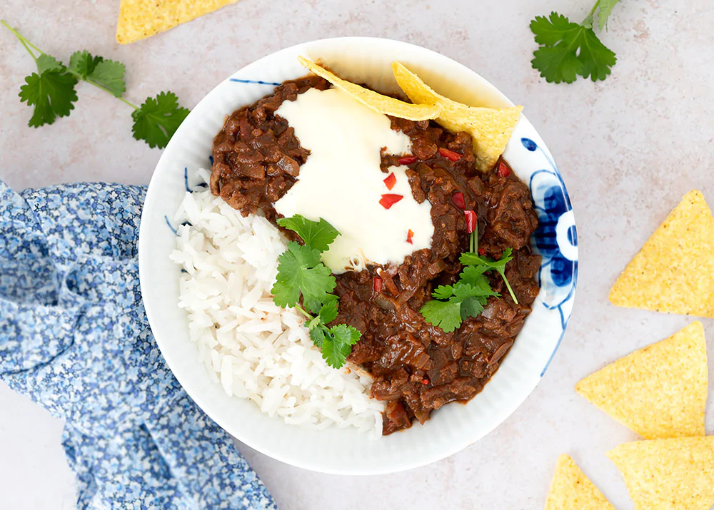

This is my easiest and child friendly Chilli Con Carne recipe.
This a very tasty yet not to spicy so the whole family can enjoy it!
If You prefer it with more spice, just double or trible the amout of chilli or add cayenne pepper.
- Cook time: 50 min
- Active time: 20 min
- Servings: 4-6
Ingredients:
- 1 tsp ground cumin
- 1 tsp cinnamon
- 1 tsp ground coriander
- 0,5 tsp chilli flakes
- 2 cloves of garlic, minced
- 2 onion, minced
- 500 g ground beef, minced
- 1 can of chopped tomatoes
- 3 tbsp sun-dried tomatoes
- 1 dl beef broth (bouillion)
- 2 cans of baked beans
- 40 g dark chokolate
- 3 tbsp olive oil
To be served with it:
- 3 dl rice
- 200 g cheddar
- 2 dl cremefraiche
Directions:
- Warm the olive oil up in a big pot. (heatlevel 7/10)
- Add ground cumin, cinnamon, coriander, chilli and garlic.
- Stir for a few minutes and then turn down the heat a bit.
- Add onion and wait until they get transparent and then add the ground beef.
- When meat looks ready, add tomatoes and beef broth.
- Put lid on it and let it cook for about 30 minutes.
- Start considering boiling rice, if you desire.
- At last: Add beans and chokolate.
- Stir it for about 5 minutes and add salt and pepper according to taste.
Can be served with rice, cheddar and cremefraiche. BON APPETITE!
Back to homepage